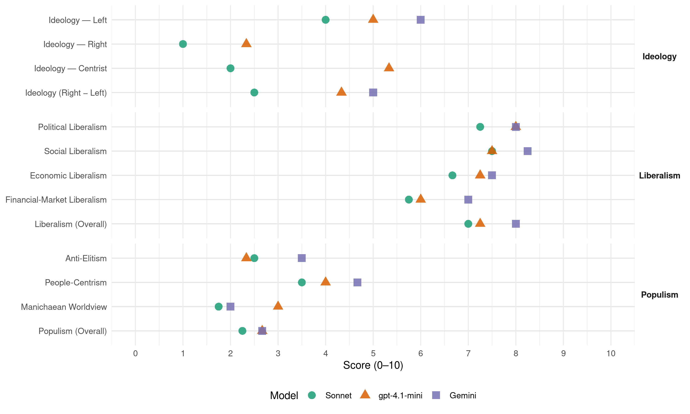

PLN (Costa Rica, 2006)
manifesto_id 153321_200602
Get full text: This site shows derived annotations and short verbatim quotes only. The full manifesto text is © Manifesto Project / WZB — obtain it via manifesto-project.wzb.eu using the manifesto_id above.
Headline scores
| Dimension | Sonnet | gpt-4.1-mini | Gemini |
|---|---|---|---|
| Populism (Overall) | 2.2 | 2.7 | 2.7 |
| Anti-Elitism | 2.5 | 2.3 | 3.5 |
| People-Centrism | 3.5 | 4.0 | 4.7 |
| Manichaean Worldview | 1.8 | 3.0 | 2.0 |
| Ideology (Right − Left) | 2.5 | 4.3 | 5.0 |
| Liberalism (Overall) | 7.0 | 7.2 | 8.0 |
| Political Liberalism | 7.2 | 8.0 | 8.0 |
| Social Liberalism | 7.5 | 7.5 | 8.2 |
| Economic Liberalism | 6.7 | 7.2 | 7.5 |
| Financial-Market Liberalism | 5.8 | 6.0 | 7.0 |
Evidence per dimension
Economic Liberalism
Gemini · score 7.0 · verified · chunk 1
“el mercado es, sin duda, el mecanismo más eficiente”
Seguimos creyendo que, aunque el mercado es, sin duda, el mecanismo más eficiente para asignar los recursos
Gemini · score 7.0 · verified · chunk 2
“sana competencia que beneficie a las familias”
para que se dé una sana competencia que beneficie a las familias, así como diversas opciones técnicas
Gemini · score 8.0 · verified · chunk 3
“promover la competencia, para que muchos”
Es necesaria una activa acción desde un Estado activo por promover la competencia, para que muchos puedan tener la posibilidad de formar su empresa
Gemini · score 8.0 · verified · chunk 4
“principios de libre comercio”
La defensa de los principios de libre comercio y el rechazo al proteccionismo comercial.
gpt-4.1-mini · score 7.0 · verified · chunk 1
“disciplina macroeconómica, el control del gasto público, la deuda pública y la inflación”
Una socialdemocracia moderna es la que comprende que la disciplina macroeconómica, el control del gasto público, la deuda pública y la inflación no son el fruto de una delirante conspiración neoliberal, sino el legado de numerosos episodios de populismo macroeconómico en toda América Latina.
gpt-4.1-mini · score 7.0 · verified · chunk 2
“mercado, competencia, empresa, impuestos, comercio, regulación, privatización”
…se promueve el mercado, competencia, empresa, impuestos, comercio, regulación y privatización como base económica…
gpt-4.1-mini · score 8.0 · verified · chunk 3
“promover la competencia y fomentar la calidad”
…la mejora regulativa tiene otras dos dimensiones sobre las que es preciso actuar: Promoción de la competencia. Es necesaria una activa acción desde un Estado activo por promover la competencia, para que muchos puedan tener la posibilidad de formar su empresa, incursionar en los más diversos campos empresariales y por esa vía ampliar las opciones al consumidor en precio y en diversidad de bienes y servicios…
gpt-4.1-mini · score 7.0 · verified · chunk 4
“promover la inversión pública y privada en este sector”
Considerando que el sector forestal es un importante motor de desarrollo y socialización de recursos ambientales y económicos, es necesario que en el país se promueva la inversión pública y privada en este sector, para lo cual haremos las siguientes acciones:
Sonnet · score 6.0 · mixed · chunk 1
“el mercado es, sin duda, el mecanismo más eficiente”
Seguimos creyendo que, aunque el mercado es, sin duda, el mecanismo más eficiente para asignar los recursos en una sociedad, no conduce necesariamente a resultados económica o socialmente óptimos
Sonnet · score 6.0 · verified · chunk 2
“multiplicidad de empresas operando dentro del sector, para que se dé una sana competencia”
el Ministerio propiciará la existencia de una multiplicidad de empresas operando dentro del sector, para que se dé una sana competencia que beneficie a las familias
Sonnet · score 7.0 · verified · chunk 3
“eliminar trámites y regulaciones que son innecesarios”
la futura administración estará comprometida con la tarea de eliminar trámites y regulaciones que son innecesarios y obstaculizan la actividad del sector privado
Sonnet · score 7.0 · verified · chunk 4
“apertura gradual, selectiva y regulada de los monopolios”
el próximo gobierno hará realidad ese principio constitucional mediante una apertura gradual, selectiva y regulada de los monopolios públicos existentes
Financial-Market Liberalism
Gemini · score 7.0 · verified · chunk 1
“acceso al crédito en condiciones favorables”
hacer un esfuerzo decidido por permitir el acceso al crédito en condiciones favorables; y garantizar a todos
Gemini · score 7.0 · verified · chunk 2
“creación de un mercado secundario de hipotecas”
para esta sentida necesidad social; Apoyar la creación de un mercado secundario de hipotecas, que vendrá a reducir los costos
Gemini · score 7.0 · verified · chunk 3
“reformas y modernizan la banca estatal”
las de comercio exterior; las que reforman y modernizan la banca estatal; y aquellas dirigidas a impulsar las PYMES
Gemini · score 7.0 · verified · chunk 4
“utilización de instrumentos financieros”
Promover la utilización de instrumentos financieros y ambientales novedosos, por ejemplo: Canon
gpt-4.1-mini · score 6.0 · verified · chunk 1
“revisión y activación de los mecanismos para permite que la inversión privada complemente la inversión pública en infraestructura”
Ello requiere la creación de un marco regulativo que haga posible una apertura gradual, selectiva y ordenada de algunos monopolios estatales; la revisión y activación de los mecanismos para permite que la inversión privada complemente la inversión pública en infraestructura, la simplificación de los trámites exigidos por nuestras instituciones.
gpt-4.1-mini · score 6.0 · verified · chunk 3
“la Banca para el Desarrollo deberá desarrollar actividades de servicios de desarrollo empresarial”
…La Banca para el Desarrollo deberá desarrollar actividades de servicios de desarrollo empresarial y actividades de garantía de proyectos. Estos esquemas de garantía de proyectos podrán ser utilizados por los empresarios para gestionar sus créditos en todo el sistema bancario nacional…
gpt-4.1-mini · score 6.0 · verified · chunk 4
“los Fondos de Pensiones Complementarias puedan ser invertidos en obras públicas”
Entre otras reformas, se debería permitir que los dineros que captan los Fondos de Pensiones Complementarias puedan ser invertidos en obras públicas, lo que permitiría no sólo la construcción inmediata de obras de infraestructura para el desarrollo económico del país, tales como la modernización de puertos, expansión de aeropuertos y construcción de carreteras vitales,
Sonnet · score 5.0 · verified · chunk 1
“bajando las tasas de interés”
Mejorar las oportunidades de bienestar de la clase media y procurar su expansión, bajando las tasas de interés y poniendo en marcha una agresiva política para crear empleos formales
Sonnet · score 6.0 · verified · chunk 2
“Apoyar la creación de un mercado secundario de hipotecas”
Apoyar la creación de un mercado secundario de hipotecas, que vendrá a reducir los costos y a agilizar la obtención del crédito de vivienda
Sonnet · score 6.0 · verified · chunk 3
“capital de riesgo o venture capital”
mecanismos que permitan financiar proyectos de inversión que caen dentro de la categoría de capital de riesgo o venture capital
Sonnet · score 6.0 · verified · chunk 4
“dineros que captan los Fondos de Pensiones Complementarias”
se debería permitir que los dineros que captan los Fondos de Pensiones Complementarias puedan ser invertidos en obras públicas
Political Liberalism
Gemini · score 8.0 · verified · chunk 1
“la pureza del sufragio”
Nacieron en Liberación Nacional la lucha por la pureza del sufragio y las instituciones para garantizarla
Gemini · score 8.0 · verified · chunk 2
“Fortalecer la integración social, la democracia y la pluralidad”
Nuestra política cultural aspira a: Fortalecer la integración social, la democracia y la pluralidad; Propiciar cambios culturales
Gemini · score 8.0 · verified · chunk 3
“respeto del estado de derecho”
nuestra ventaja competitiva crucial la cual, aunada a la tradición de paz que nos ha dado un sitio distinguido entre las naciones, al respeto del estado de derecho y a nuestra centenaria tradición de solidaridad social
Gemini · score 8.0 · verified · chunk 4
“democracia moderna y representativa”
Así se fortalecerá el vínculo que debe existir, en toda democracia moderna y representativa, entre el mandato
gpt-4.1-mini · score 8.0 · verified · chunk 1
“hacer que el pueblo recupere su fe en las instituciones democráticas”
LUCHAR CONTRA LA CORRUPCIÓN. Ninguna tarea es más urgente en Costa Rica que la de hacer que el pueblo recupere su fe en las instituciones democráticas, en los partidos políticos y en sus dirigentes.
gpt-4.1-mini · score 8.0 · verified · chunk 2
“la democracia, los derechos, elecciones, cortes, medios”
…menciona la importancia de la democracia, los derechos, elecciones, cortes, medios y parlamento para la gobernanza…
gpt-4.1-mini · score 8.0 · verified · chunk 3
“la Constitución Política, y en particular el artículo 50”
…La intervención gubernamental se deriva de nuestra Constitución Política, y en particular el artículo 50, que señala: El Estado procurará el mayor bienestar a todos los habitantes del país, organizando y estimulando la producción y el más adecuado reparto de la riqueza, para añadir además que, toda persona tiene derecho a un ambiente sano y ecológicamente equilibrado…
gpt-4.1-mini · score 8.0 · verified · chunk 4
“Artículo 11 de la Constitución garantiza el principio de la transparencia”
Sí a la transparencia y la rendición de cuentas El artículo 11 de la Constitución garantiza el principio de la transparencia en el ejercicio de la función pública. Este principio se encuentra inactuado hasta el momento, salvo por la Ley de Enriquecimiento Ilícito aprobada por la actual Asamblea Legislativa.
Sonnet · score 7.0 · verified · chunk 1
“las únicas armas legítimas para resolver los conflictos”
las únicas armas legítimas para resolver los conflictos, en Costa Rica o en el mundo, son las de la razón, el diálogo y la democracia
Sonnet · score 7.0 · verified · chunk 2
“Fortalecer la integración social, la democracia y la pluralidad”
Nuestra política cultural aspira a: Fortalecer la integración social, la democracia y la pluralidad
Sonnet · score 7.0 · verified · chunk 3
“respeto del estado de derecho”
la tradición de paz que nos ha dado un sitio distinguido entre las naciones, al respeto del estado de derecho y a nuestra centenaria tradición de solidaridad social
Sonnet · score 8.0 · verified · chunk 4
“democracia moderna y representativa”
el vínculo que debe existir, en toda democracia moderna y representativa, entre el mandato del pueblo, los compromisos de campaña, la rendición de cuentas
Liberalism (Overall)
Gemini · score 8.0 · verified · chunk 1
“el mercado es, sin duda, el mecanismo más eficiente”
Seguimos creyendo que, aunque el mercado es, sin duda, el mecanismo más eficiente para asignar los recursos
Gemini · score 8.0 · verified · chunk 2
“sana competencia que beneficie a las familias”
para que se dé una sana competencia que beneficie a las familias, así como diversas opciones técnicas
Gemini · score 8.0 · verified · chunk 3
“respeto del estado de derecho”
nuestra ventaja competitiva crucial la cual, aunada a la tradición de paz que nos ha dado un sitio distinguido entre las naciones, al respeto del estado de derecho y a nuestra centenaria tradición de solidaridad social
Gemini · score 8.0 · verified · chunk 4
“democracia moderna y representativa”
Así se fortalecerá el vínculo que debe existir, en toda democracia moderna y representativa, entre el mandato
gpt-4.1-mini · score 7.0 · verified · chunk 1
“compromiso con el desarrollo humano, la integración social, la paz social, la igualdad de oportunidades”
Durante la futura administración del Dr. Oscar Arias, Costa Rica se caracterizará por una política social solidaria e incluyente, orientada al logro del desarrollo humano, y sustentada en los principios de integración, paz social, igualdad de oportunidades, equidad de género y reconocimiento a la diversidad.
gpt-4.1-mini · score 8.0 · verified · chunk 2
“la democracia, los derechos, mercado, competencia, igualdad”
…el texto destaca la democracia, derechos, mercado, competencia e igualdad como fundamentos liberales…
gpt-4.1-mini · score 7.0 · verified · chunk 3
“la mejora regulativa tiene otras dos dimensiones sobre las que es preciso actuar”
…la mejora regulativa tiene otras dos dimensiones sobre las que es preciso actuar: Promoción de la competencia. Es necesaria una activa acción desde un Estado activo por promover la competencia, para que muchos puedan tener la posibilidad de formar su empresa, incursionar en los más diversos campos empresariales y por esa vía ampliar las opciones al consumidor en precio y en diversidad de bienes y servicios…
gpt-4.1-mini · score 7.0 · verified · chunk 4
“Artículo 11 de la Constitución garantiza el principio de la transparencia”
Sí a la transparencia y la rendición de cuentas El artículo 11 de la Constitución garantiza el principio de la transparencia en el ejercicio de la función pública. Este principio se encuentra inactuado hasta el momento, salvo por la Ley de Enriquecimiento Ilícito aprobada por la actual Asamblea Legislativa.
Sonnet · score 7.0 · verified · chunk 1
“socialdemocracia moderna, flexible y abierta al cambio”
se muestre capaz de abrazar una socialdemocracia moderna, flexible y abierta al cambio, capaz de navegar entre las aguas del populismo de izquierda y el fundamentalismo de la extrema derecha libertaria
Sonnet · score 7.0 · verified · chunk 2
“equidad de género es un principio fundamental”
La equidad de género es un principio fundamental que cruza toda nuestra propuesta de política social.
Sonnet · score 7.0 · verified · chunk 3
“agilizar el camino a la inversión privada”
Para crear más y mejores empleos, debemos agilizar el camino a la inversión privada, tanto de origen nacional como extranjera
Sonnet · score 7.0 · verified · chunk 4
“defensa de los principios de libre comercio”
La defensa de los principios de libre comercio y el rechazo al proteccionismo comercial. Es preciso recuperar para Costa Rica liderazgo
Anti-Elitism
Gemini · score 4.0 · verified · chunk 2
“definición de prioridades frecuentemente fijada por intereses privados”
por mala administración y por una definición de prioridades frecuentemente fijada por intereses privados y no, como corresponde, por el Estado.
Gemini · score 3.0 · verified · chunk 4
“grupos de presión capitalizan sus intereses”
Por otra parte, los grupos de presión capitalizan sus intereses y el marco legal crece sin unidad
gpt-4.1-mini · score 3.0 · verified · chunk 1
“hacer que el pueblo recupere su fe en las instituciones democráticas”
LUCHAR CONTRA LA CORRUPCIÓN. Ninguna tarea es más urgente en Costa Rica que la de hacer que el pueblo recupere su fe en las instituciones democráticas, en los partidos políticos y en sus dirigentes. Erosionada por muchos años, en el pasado reciente esa confianza ha sufrido terribles golpes derivados de escándalos de corrupción de una gravedad insospechada e inédita.
gpt-4.1-mini · score 2.0 · verified · chunk 3
“el Estado no cumple con las tareas que le corresponden”
…a que, durante muchos años ya, nuestra economía ha venido creciendo muy por debajo de su potencial. Y esto se debe, en parte, a que el Estado no cumple con las tareas que le corresponden y tampoco facilita que el sector privado cumpla las suyas. Se ha permitido que, por una parte, el país acumule un déficit creciente de bienes públicos como lo evidencia el estado calamitoso de nuestras carreteras y que, por otra, el frondoso árbol de las regulaciones y trámites se convierta en un verdadero obstáculo al desarrollo de las actividades empresariales…
gpt-4.1-mini · score 2.0 · verified · chunk 4
“los grupos de presión capitalizan sus intereses”
La Asamblea Legislativa incurre en aprobación de leyes y convenios internacionales, agregando confusión a la situación del país en materia pública, precisamente por ignorar u omitir el valioso marco legal disponible. Por otra parte, los grupos de presión capitalizan sus intereses y el marco legal crece sin unidad ni visión estratégica del desarrollo nacional.
Sonnet · score 2.0 · verified · chunk 1
“grupos, gremios e intereses minoritarios y mezquinos”
el dominio estatal de un servicio o institución no es otra cosa que una coartada para esconder su control por parte de grupos, gremios e intereses minoritarios y mezquinos, que muy poco tienen que ver con los del pueblo costarricense
Sonnet · score 3.0 · verified · chunk 2
“intereses privados y no, como corresponde, por el Estado”
El sector no ha estado exento de escándalos por mala administración y por una definición de prioridades frecuentemente fijada por intereses privados y no, como corresponde, por el Estado.
Sonnet · score 2.0 · verified · chunk 3
“solo los ideólogos más conservadores creen”
Es una decisión que solo los ideólogos más conservadores creen que debe abandonarse enteramente a las fuerzas de mercado.
Sonnet · score 3.0 · verified · chunk 4
“los grupos de presión capitalizan sus intereses”
el marco legal crece sin unidad ni visión estratégica del desarrollo nacional. Por otra parte, los grupos de presión capitalizan sus intereses y el marco legal crece sin unidad
Ideology — Centrist
gpt-4.1-mini · score 6.0 · verified · chunk 1
“navegar entre las aguas del populismo de izquierda y el fundamentalismo de la extrema derecha libertaria”
hacer que Liberación Nacional, al igual que casi todos los partidos políticos socialdemócratas del mundo, se mire críticamente a sí mismo y se muestre capaz de abrazar una socialdemocracia moderna, flexible y abierta al cambio, capaz de navegar entre las aguas del populismo de izquierda y el fundamentalismo de la extrema derecha libertaria.
gpt-4.1-mini · score 5.0 · verified · chunk 3
“la política económica está al servicio del bienestar de las personas”
…porque entendemos que la política económica está al servicio del bienestar de las personas y porque, congruentes con esto, escogemos desarrollar ventajas competitivas basadas en la calidad de nuestros recursos humanos…
gpt-4.1-mini · score 5.0 · verified · chunk 4
“el Estado debe estar al servicio de las personas”
Es hora de cambiar profundamente. El Estado debe estar al servicio de las personas. Preservando los fines y los objetivos para los que fueron creados, es hora de acometer la reforma de los instrumentos y hacer que los medios, de nuevo, sirvan al propósito de los fines y de los usuarios de los servicios públicos.
Sonnet · score 2.0 · verified · chunk 1
“todos los costarricenses a este esfuerzo”
Convoco a todos los costarricenses a este esfuerzo por hacer de Costa Rica el primer país desarrollado de América Latina
Sonnet · score 2.0 · verified · chunk 2
“combinar los estímulos y restricciones que ofrece el mercado”
el crecimiento económico resulta de combinar los estímulos y restricciones que ofrece el mercado con una política estatal activa para promover el crecimiento y el desarrollo
Sonnet · score 2.0 · verified · chunk 3
“enfoque del desarrollo obedece a una visión socialdemócrata”
Nuestro enfoque del desarrollo obedece a una visión socialdemócrata, en la que el crecimiento económico va ligado a la equidad
Sonnet · score 2.0 · verified · chunk 4
“cooperación pública y privada, en vez de la confrontación”
La nueva estrategia requiere la cooperación pública y privada, en vez de la confrontación entre ambos sectores. Se requiere aglutinar a los actores
Ideology — Left
Gemini · score 6.0 · verified · chunk 2
“visión socialdemócrata sobre la relación entre el crecimiento”
Don Pepe planteó la esencia de la visión socialdemócrata sobre la relación entre el crecimiento económico y el bienestar de los ciudadanos.
gpt-4.1-mini · score 7.0 · verified · chunk 1
“compromiso de que la sociedad asegure a todos los ciudadanos un nivel de vida compatible con su dignidad humana”
Seguimos creyendo intensamente en el valor de la igualdad, en el ineludible compromiso de que la sociedad asegure a todos los ciudadanos un nivel de vida compatible con su dignidad humana y les provea acceso universal a ciertos bienes capaces de potenciar sus habilidades y sus posibilidades de ascenso social.
gpt-4.1-mini · score 4.0 · verified · chunk 3
“una transformación progresiva del sistema tributario que haga pagar más a quien más tiene”
…este aumento del gasto y la inversión implica un aumento de la recaudación tributaria, el cual se logrará a través de una transformación progresiva del sistema tributario que haga pagar más a quien más tiene, un esfuerzo riguroso para combatir la evasión, y una reforma profunda de la organización y el marco legal del sistema tributario…
gpt-4.1-mini · score 4.0 · verified · chunk 4
“la socialdemocracia defiende un Estado vigoroso y eficiente”
Una prioridad socialdemócrata: Un Estado vigoroso, eficiente y transparente La socialdemocracia defiende un Estado vigoroso y eficiente, que además sea incluyente, solidario y sujeto al control democrático de la ciudadanía.
Sonnet · score 4.0 · verified · chunk 1
“reducir las desigualdades en la distribución de la riqueza”
de controlar, y en lo posible reducir, las desigualdades en la distribución de la riqueza, una tarea que está más allá de lo que el mercado puede lograr
Sonnet · score 5.0 · verified · chunk 2
“crecimiento económico es, por encima de cualquier otra cosa, un instrumento de la política social”
para nosotros, los socialdemócratas, el crecimiento económico es, por encima de cualquier otra cosa, un instrumento de la política social
Sonnet · score 3.0 · verified · chunk 3
“sistema tributario que haga pagar más”
una transformación progresiva del sistema tributario que haga pagar más a quien más tiene
Sonnet · score 4.0 · verified · chunk 4
“socialdemocracia defiende un Estado vigoroso y eficiente”
Una prioridad socialdemócrata: Un Estado vigoroso, eficiente y transparente. La socialdemocracia defiende un Estado vigoroso y eficiente, que además sea incluyente, solidario
Ideology (Right − Left)
Gemini · score 5.0 · verified · chunk 2
“visión socialdemócrata sobre la relación entre el crecimiento”
Don Pepe planteó la esencia de la visión socialdemócrata sobre la relación entre el crecimiento económico y el bienestar de los ciudadanos.
gpt-4.1-mini · score 5.0 · verified · chunk 1
“hacer que Liberación Nacional se mire críticamente a sí mismo”
hacer que Liberación Nacional, al igual que casi todos los partidos políticos socialdemócratas del mundo, se mire críticamente a sí mismo y se muestre capaz de abrazar una socialdemocracia moderna, flexible y abierta al cambio, capaz de navegar entre las aguas del populismo de izquierda y el fundamentalismo de la extrema derecha libertaria.
gpt-4.1-mini · score 4.0 · verified · chunk 3
“una transformación progresiva del sistema tributario que haga pagar más a quien más tiene”
…este aumento del gasto y la inversión implica un aumento de la recaudación tributaria, el cual se logrará a través de una transformación progresiva del sistema tributario que haga pagar más a quien más tiene, un esfuerzo riguroso para combatir la evasión, y una reforma profunda de la organización y el marco legal del sistema tributario…
gpt-4.1-mini · score 4.0 · verified · chunk 4
“la socialdemocracia defiende un Estado vigoroso y eficiente”
Una prioridad socialdemócrata: Un Estado vigoroso, eficiente y transparente La socialdemocracia defiende un Estado vigoroso y eficiente, que además sea incluyente, solidario y sujeto al control democrático de la ciudadanía.
Sonnet · score 2.0 · verified · chunk 1
“propuesta socialdemócrata a la altura de los nuevos tiempos”
para redefinir el alcance y el contenido de una propuesta socialdemócrata a la altura de los nuevos tiempos
Sonnet · score 4.0 · verified · chunk 2
“visión socialdemócrata sobre la relación entre el crecimiento económico”
Don Pepe planteó la esencia de la visión socialdemócrata sobre la relación entre el crecimiento económico y el bienestar de los ciudadanos
Sonnet · score 2.0 · verified · chunk 3
“visión socialdemócrata”
Nuestro enfoque del desarrollo obedece a una visión socialdemócrata, en la que el crecimiento económico va ligado a la equidad y a la sostenibilidad ambiental
Sonnet · score 2.0 · verified · chunk 4
“opciones populistas e irresponsables”
la fragmentación partidaria y el ascenso de opciones populistas e irresponsables. Asimismo, los últimos cuatro años nos debieron haber enseñado
Ideology — Right
gpt-4.1-mini · score 2.0 · verified · chunk 1
“rechazar el proteccionismo comercial o los monopolios estatales”
Debemos admitir que, frente a esas tendencias, algunos de nuestros instrumentos tradicionales de acción política, como el proteccionismo comercial o los monopolios estatales en algunos sectores excepcionalmente dinámicos, se han tornado obsoletos.
gpt-4.1-mini · score 2.0 · verified · chunk 3
“respeto del estado de derecho y a nuestra centenaria tradición de solidaridad social”
…que nos coloque en la senda del crecimiento acelerado y la prosperidad compartida. Las experiencias modernas en materia de desarrollo económico han puesto en evidencia que no es la mera dotación de recursos físicos o la ubicación geográfica lo que determina la prosperidad o pobreza de una nación…
gpt-4.1-mini · score 3.0 · verified · chunk 4
“fortalecer la autonomía municipal”
El reto que tenemos es fortalecer la autonomía municipal, para que las comunidades y los gobiernos locales puedan definir políticas de desarrollo local adecuadas con sus elementos tributarios, normativos y administrativos que redunden en una mejor calidad de vida para sus habitantes.
Sonnet · score 1.0 · verified · chunk 1
“luchar contra la delincuencia y las drogas”
luchar contra la corrupción, luchar contra la pobreza y la desigualdad, integrarnos al mundo para crear empleos de calidad, educar para el siglo XXI, luchar contra la delincuencia y las drogas
Sonnet · score 1.0 · verified · chunk 2
“política migratoria del país será parte de una estrategia”
la política migratoria del país será parte de una estrategia de cooperación con los países vecinos, especialmente con los países de origen de los inmigrantes
Sonnet · score 1.0 · verified · chunk 3
“integración económica con el mundo”
La integración económica con el mundo, lejos de ser una amenaza, ofrece a Costa Rica una oportunidad extraordinaria
Sonnet · score 1.0 · verified · chunk 4
“relaciones respetuosas con Nicaragua, Centroamérica”
Sí a relaciones respetuosas con Nicaragua, Centroamérica y otros países hermanos. En el marco del pleno respeto al Derecho Internacional
Manichaean Worldview
Gemini · score 2.0 · verified · chunk 4
“opciones populistas e irresponsables”
la fragmentación partidaria y el ascenso de opciones populistas e irresponsables. Asimismo, los últimos cuatro
gpt-4.1-mini · score 4.0 · verified · chunk 1
“la corrupción ofende a los ciudadanos, empobrece a los pueblos y subvierte a la democracia”
La corrupción ofende a los ciudadanos, empobrece a los pueblos y subvierte a la democracia. LUCHAR CONTRA LA POBREZA Y LA DESIGUALDAD. Es ofensivo que un millón de compatriotas no estén hoy en condiciones de satisfacer sus necesidades básicas.
gpt-4.1-mini · score 2.0 · verified · chunk 4
“corrupción pública y privada”
la ausencia de responsabilidad y transparencia públicas que genera distintos grados de corrupción pública y privada. Todo ello ha terminado por distanciar al Estado de sus fines de servicio público y de los intereses de los ciudadanos.
Sonnet · score 2.0 · verified · chunk 1
“navegar entre las aguas del populismo de izquierda”
capaz de navegar entre las aguas del populismo de izquierda y el fundamentalismo de la extrema derecha libertaria
Sonnet · score 2.0 · verified · chunk 2
“clientelismo e ineficiencia en muchos de los programas”
esta lucha se ha visto afectada por problemas importantes: Clientelismo e ineficiencia en muchos de los programas del IMAS
Sonnet · score 1.0 · verified · chunk 3
“espectáculo de las grandes mayorías empobrecidas”
sería responsabilidad de todos los costarricenses de buena intención… para que desapareciera el espectáculo de las grandes mayorías empobrecidas por la ineficiencia y el privilegio
Sonnet · score 2.0 · verified · chunk 4
“opciones populistas e irresponsables”
la fragmentación partidaria y el ascenso de opciones populistas e irresponsables. Asimismo, los últimos cuatro años nos debieron haber enseñado
People-Centrism
Gemini · score 5.0 · verified · chunk 1
“las aspiraciones de nuestro pueblo”
volver a convertir a Liberación Nacional en una caja de resonancia para las aspiraciones de nuestro pueblo y renovar el mensaje
Gemini · score 5.0 · verified · chunk 2
“como patrimonio de todos los costarricenses”
Caja Costarricense de Seguro Social, como patrimonio de todos los costarricenses; Universalidad en el acceso a los servicios
Gemini · score 4.0 · verified · chunk 4
“Estado al servicio de las personas”
Es hora de cambiar profundamente. El Estado debe estar al servicio de las personas. Preservando los fines
gpt-4.1-mini · score 6.0 · verified · chunk 1
“convertir a Liberación Nacional en una caja de resonancia para las aspiraciones de nuestro pueblo”
Nos toca volver a convertir a Liberación Nacional en una caja de resonancia para las aspiraciones de nuestro pueblo y renovar el mensaje liberacionista para ponerlo a tono con los inmensos cambios que está experimentando el mundo.
gpt-4.1-mini · score 3.0 · verified · chunk 3
“la política económica está al servicio del bienestar de las personas”
…porque entendemos que la política económica está al servicio del bienestar de las personas y porque, congruentes con esto, escogemos desarrollar ventajas competitivas basadas en la calidad de nuestros recursos humanos…
gpt-4.1-mini · score 3.0 · verified · chunk 4
“el Estado debe estar al servicio de las personas”
Es hora de cambiar profundamente. El Estado debe estar al servicio de las personas. Preservando los fines y los objetivos para los que fueron creados, es hora de acometer la reforma de los instrumentos y hacer que los medios, de nuevo, sirvan al propósito de los fines y de los usuarios de los servicios públicos.
Sonnet · score 4.0 · verified · chunk 1
“pueblo costarricense optará, en esta hora crucial”
Estamos convencidos de que el pueblo costarricense optará, en esta hora crucial, por una propuesta responsable y segura, por un equipo sólido y balanceado
Sonnet · score 4.0 · verified · chunk 2
“patrimonio de todos los costarricenses”
Fortalecimiento inequívoco de la salud pública y, en particular, de la Caja Costarricense de Seguro Social, como patrimonio de todos los costarricenses
Sonnet · score 3.0 · verified · chunk 3
“todos los costarricenses nuestra ventaja competitiva”
nos proponemos hacer de la inteligencia, el conocimiento, habilidades y capacitación de todos los costarricenses nuestra ventaja competitiva crucial
Sonnet · score 3.0 · verified · chunk 4
“El Estado debe estar al servicio de las personas”
Es hora de cambiar profundamente. El Estado debe estar al servicio de las personas. Preservando los fines y los objetivos para los que fueron creados
Populism (Overall)
Gemini · score 2.0 · verified · chunk 1
“las aspiraciones de nuestro pueblo”
volver a convertir a Liberación Nacional en una caja de resonancia para las aspiraciones de nuestro pueblo y renovar el mensaje
Gemini · score 3.0 · verified · chunk 2
“definición de prioridades frecuentemente fijada por intereses privados”
por mala administración y por una definición de prioridades frecuentemente fijada por intereses privados y no, como corresponde, por el Estado.
Gemini · score 3.0 · verified · chunk 4
“opciones populistas e irresponsables”
la fragmentación partidaria y el ascenso de opciones populistas e irresponsables. Asimismo, los últimos cuatro
gpt-4.1-mini · score 4.0 · verified · chunk 1
“hacer que el pueblo recupere su fe en las instituciones democráticas”
LUCHAR CONTRA LA CORRUPCIÓN. Ninguna tarea es más urgente en Costa Rica que la de hacer que el pueblo recupere su fe en las instituciones democráticas, en los partidos políticos y en sus dirigentes. Erosionada por muchos años, en el pasado reciente esa confianza ha sufrido terribles golpes derivados de escándalos de corrupción de una gravedad insospechada e inédita.
gpt-4.1-mini · score 2.0 · verified · chunk 3
“el Estado no cumple con las tareas que le corresponden”
…a que, durante muchos años ya, nuestra economía ha venido creciendo muy por debajo de su potencial. Y esto se debe, en parte, a que el Estado no cumple con las tareas que le corresponden y tampoco facilita que el sector privado cumpla las suyas. Se ha permitido que, por una parte, el país acumule un déficit creciente de bienes públicos como lo evidencia el estado calamitoso de nuestras carreteras y que, por otra, el frondoso árbol de las regulaciones y trámites se convierta en un verdadero obstáculo al desarrollo de las actividades empresariales…
gpt-4.1-mini · score 2.0 · verified · chunk 4
“los grupos de presión capitalizan sus intereses”
La Asamblea Legislativa incurre en aprobación de leyes y convenios internacionales, agregando confusión a la situación del país en materia pública, precisamente por ignorar u omitir el valioso marco legal disponible. Por otra parte, los grupos de presión capitalizan sus intereses y el marco legal crece sin unidad ni visión estratégica del desarrollo nacional.
Sonnet · score 2.0 · verified · chunk 1
“volver a encontrarnos con nosotros mismos”
Los apasionados debates internos sirvieron para volver a encontrarnos con nosotros mismos y para redefinir el alcance y el contenido de una propuesta socialdemócrata
Sonnet · score 3.0 · verified · chunk 2
“intereses privados y no, como corresponde, por el Estado”
El sector no ha estado exento de escándalos por mala administración y por una definición de prioridades frecuentemente fijada por intereses privados y no, como corresponde, por el Estado.
Sonnet · score 2.0 · verified · chunk 3
“todos los costarricenses nuestra ventaja competitiva”
nos proponemos hacer de la inteligencia, el conocimiento, habilidades y capacitación de todos los costarricenses nuestra ventaja competitiva crucial
Sonnet · score 2.0 · verified · chunk 4
“Estado caótico, endeudado, esclerótico y profundamente ineficiente”
Lo que tenemos hoy es un Estado caótico, endeudado, esclerótico y profundamente ineficiente. El diagnóstico realizado en más de cuarenta ministerios
Social Liberalism